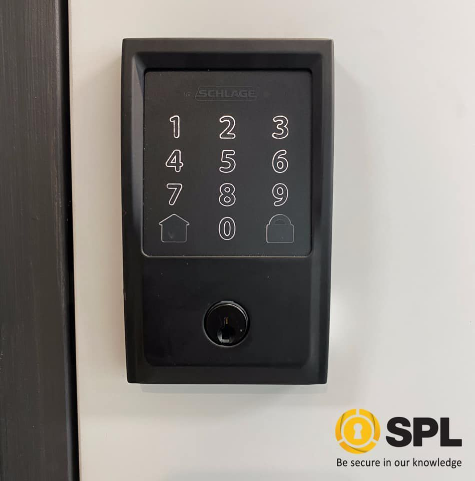

On this page
AT A GLANCE
At SPL Security Solutions, we offer a wide range of intercom systems designed to enhance communication and security for properties across the Gold Coast.
Intercom Systems Gold Coast

At SPL Security Solutions, we offer a wide range of intercom systems designed to enhance communication and security for properties across the Gold Coast. Intercoms allow seamless interaction between visitors and property owners, making them a useful feature for residential, commercial and industrial spaces. Whether it’s screening guests, managing deliveries or facilitating internal communication, our intercom solutions provide convenience and peace of mind.
From simple audio intercoms to advanced video systems with remote access, we have options tailored to suit your specific requirements. Whether you’re securing a home or managing access to a business, our intercom systems are reliable, easy to use and integrate effortlessly with other security measures.
Call us today on (07) 55 888 111 to discuss the best intercom solution for your property on the Gold Coast.
Key Features of Intercom Systems
Intercom systems are versatile and packed with features to enhance communication and security. Here are some key capabilities:
- Two-Way Communication
Communicate directly with visitors before granting access, ensuring full control over who enters your property. - Video Monitoring
Advanced intercoms include video functionality, letting you visually verify visitors at the door or gate. - Remote Access
Manage intercom systems from anywhere using smartphone apps, providing convenience when you’re away from home or the office. - Integration with Security Systems
Intercoms can be linked to CCTV, alarms and automated gates for a fully connected security setup. - Durable and Weather-Resistant Options
Outdoor intercom units are built to withstand the elements, making them reliable for all property types.

Contact Details
(07) 55 888 111
24/7 Emergency Locksmiths or Security Tech

Frequently Asked Questions
-
What is the difference between audio and video intercom systems?
Audio intercom systems allow for voice communication only, while video intercoms include a camera, enabling you to see and speak to visitors. Video intercoms provide an additional layer of security by allowing visual verification before granting access.
-
Can intercom systems be used in multi-level buildings?
Yes, intercom systems are ideal for multi-level properties. They facilitate seamless communication between floors and enhance access management for both residents and businesses.
Locksmith & Security Solutions Gold Coast, Brisbane & Northern NSW